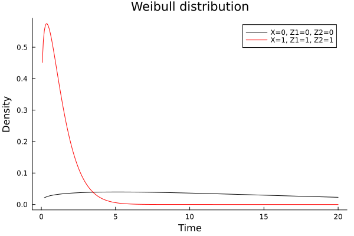
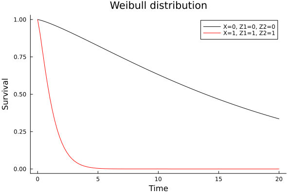
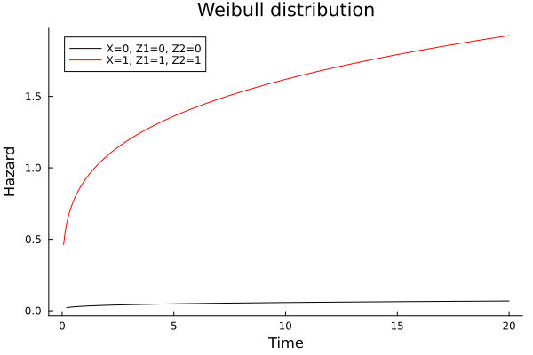
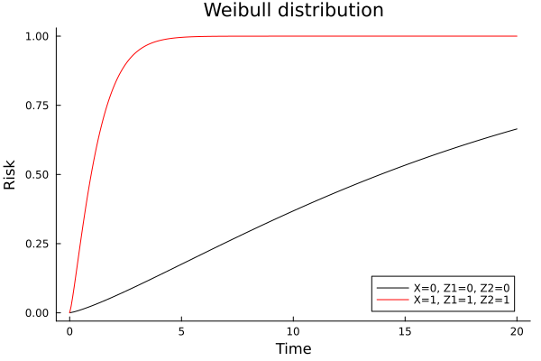
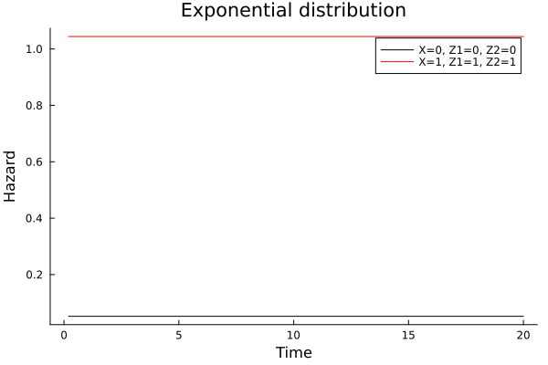
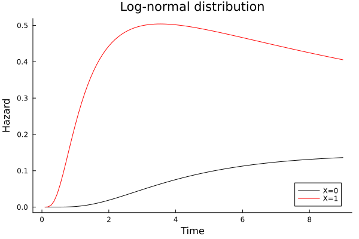
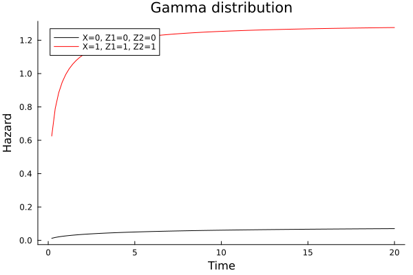
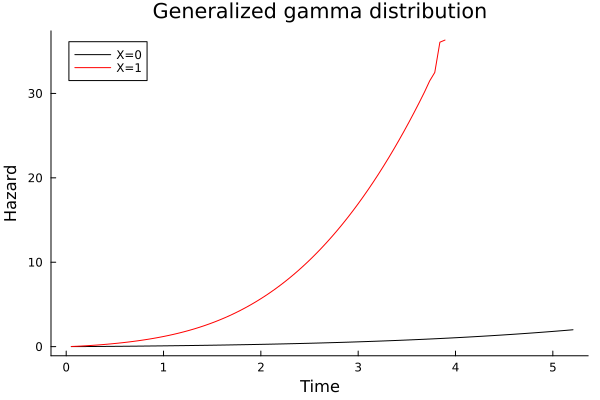

Parametric survival/risk estimation with Weibull AFT models
Weibull accelerated failure time model
cd("docs/src/fig/")
using Random, LSurvival, Distributions, LinearAlgebra, Plots
# generate some data under a discrete hazards model
id, int, out, data = LSurvival.dgm(MersenneTwister(1212), 1000, 20)
data[:, 1] = round.(data[:, 1], digits = 3)
d, X = data[:, 4], data[:, 1:3]
wt = rand(MersenneTwister(1212), length(d)) # random weights just to demonstrate usage
# Fit a Cox model with `Tables.jl` and `StatsAPI.@formula` interface (similar to GLM.jl)
tab = (id=id, in = int, out = out, d=d, x=X[:,1], z1=X[:,2], z2=X[:,3], wts=wt) # can also be a DataFrame from DataFrames.jl
weibullfit = survreg(@formula(Surv(in, out, d)~x+z1+z2), tab, wts=tab.wts, dist=LSurvival.Weibull())Output:
Maximum likelihood estimates (alpha=0.05):
────────────────────────────────────────────────────────────────────────
Est StdErr LCI UCI Z P(>|Z|)
────────────────────────────────────────────────────────────────────────
(Intercept) 2.92482 0.0808023 2.76645 3.08319 36.20 <1e-99
x -1.50998 0.135432 -1.77543 -1.24454 -11.15 <1e-99
z1 -0.072211 0.106681 -0.281301 0.136879 -0.68 0.4985
z2 -1.08864 0.0906976 -1.2664 -0.910874 -12.00 <1e-99
log(Scale) -0.223338 0.0368294 -0.295522 -0.151153 -6.06 <1e-08
────────────────────────────────────────────────────────────────────────
Weibull distribution
Log-likelihood (full): -1222.58
Log-likelihood (Intercept only): -1356.2
LRT p-value (X^2=267.23, df=3): 0
Solver iterations: 15Comparing Weibull AFT and Cox model results
For the Weibull distribution, AFT model and Cox model results can be compared directly by converting AFT estimates to hazard ratios
coxfit = coxph(@formula(Surv(in, out, d)~x+z1+z2), tab, ties = "efron", wts = wt, id = ID.(tab.id))Output:
Maximum partial likelihood estimates (alpha=0.05):
───────────────────────────────────────────────────────────
ln(HR) StdErr LCI UCI Z P(>|Z|)
───────────────────────────────────────────────────────────
x 1.78123 0.181734 1.42504 2.13742 9.80 <1e-99
z1 0.109247 0.133533 -0.152473 0.370968 0.82 0.4133
z2 1.59741 0.10216 1.39718 1.79764 15.64 <1e-99
───────────────────────────────────────────────────────────
Partial log-likelihood (null): -2460.82
Partial log-likelihood (fitted): -2314.18
LRT p-value (X^2=293.28, df=3): 0
Newton-Raphson iterations: 6Convert the AFT model parameters to hazard ratios to compare (note that this conversion is not possible for all parametric survival distributions).
scale = exp(weibullfit.P._S[1])
aftparms = coef(weibullfit)[2:end]
parmhrs = - aftparms ./ scale
hcat(coef(coxfit), parmhrs)Output: The first column is ln(HR) estimate from a Cox model, and the second is from the Weibull model
3×2 Matrix{Float64}:
1.78123 1.88785
0.109247 0.0902812
1.59741 1.36106Visualizing the distributions, probability density
using Plots
aftdist(weibullfit, label="X=0, Z1=0, Z2=0", title="Weibull distribution")
# for specific covariate levels, include a 1.0 for the intercept
aftdist!(weibullfit, covlevels=[1.0, 1.0, 1.0, 1.0], color="red", label="X=1, Z1=1, Z2=1", npoints=300)
savefig("weibull_pdf.svg")
Visualizing the distributions, survival distribution
aftdist(weibullfit, type="surv", label="X=0, Z1=0, Z2=0", title="Weibull distribution")
# for specific covariate levels, include a 1.0 for the intercept
aftdist!(weibullfit, type="surv", covlevels=[1.0, 1.0, 1.0, 1.0], color="red", label="X=1, Z1=1, Z2=1")
savefig("weibull_surv.svg")
Visualizing the distributions, hazard function
aftdist(weibullfit, type="haz", label="X=0, Z1=0, Z2=0", title="Weibull distribution")
# for specific covariate levels, include a 1.0 for the intercept
aftdist!(weibullfit, type="haz", covlevels=[1.0, 1.0, 1.0, 1.0], color="red", label="X=1, Z1=1, Z2=1", npoints=300)
savefig("weibull_haz.svg")
Visualizing the distributions, risk function
aftdist(weibullfit, type="risk", label="X=0, Z1=0, Z2=0", title="Weibull distribution")
# for specific covariate levels, include a 1.0 for the intercept
aftdist!(weibullfit, type="risk", covlevels=[1.0, 1.0, 1.0, 1.0], color="red", label="X=1, Z1=1, Z2=1", npoints=300)
savefig("weibull_risk.svg")
Other distributions
Exponential
Note that the exponential fit assumes a constant hazard.
expfit = survreg(@formula(Surv(in, out, d)~x+z1+z2), tab, wts=tab.wts, dist=LSurvival.Exponential())
aftdist(expfit, type="haz", label="X=0, Z1=0, Z2=0", title="Exponential distribution")
# for specific covariate levels, include a 1.0 for the intercept
aftdist!(expfit, type="haz", covlevels=[1.0, 1.0, 1.0, 1.0], color="red", label="X=1, Z1=1, Z2=1")
savefig("exponential_haz.svg")
Output:
Maximum likelihood estimates (alpha=0.05):
──────────────────────────────────────────────────────────────────────
Est StdErr LCI UCI Z P(>|Z|)
──────────────────────────────────────────────────────────────────────
(Intercept) 2.95353 0.100392 2.75677 3.15029 29.42 <1e-99
x -1.55072 0.16808 -1.88015 -1.22129 -9.23 <1e-99
z1 -0.082459 0.133349 -0.343818 0.1789 -0.62 0.5363
z2 -1.36337 0.101441 -1.5622 -1.16455 -13.44 <1e-99
──────────────────────────────────────────────────────────────────────
Exponential distribution
Log-likelihood (full): -1239.09
Log-likelihood (Intercept only): -1359.4
LRT p-value (X^2=240.61, df=3): 0
Solver iterations: 14Log-normal
# note this model runs into convergence issues in these data
#lognormalfit = survreg(@formula(Surv(in, out, d)~x+z1+z2), tab, wts=tab.wts, dist=LSurvival.Lognormal())
# Here are results from a simpler model
dat1 = (time = [1, 1, 6, 6, 8, 9], status = [1, 0, 1, 1, 0, 1], x = [1, 1, 1, 0, 0, 0])
lognormalfit = survreg(@formula(Surv( time, status)~x), dat1, dist=LSurvival.Lognormal())
aftdist(lognormalfit, type="haz", label="X=0", title="Log-normal distribution")
aftdist!(lognormalfit, type="haz", covlevels=[1.0], color="red", label="X=1")
savefig("lognormal_haz.svg")
Output:
Maximum likelihood estimates (alpha=0.05):
─────────────────────────────────────────────────────────────────────
Est StdErr LCI UCI Z P(>|Z|)
─────────────────────────────────────────────────────────────────────
(Intercept) 2.20995 0.40358 1.41895 3.00095 5.48 <1e-07
x -1.26752 0.585011 -2.41412 -0.120918 -2.17 0.0303
log(Scale) -0.445615 0.342319 -1.11655 0.225318 -1.30 0.1930
─────────────────────────────────────────────────────────────────────
Lognormal distribution
Log-likelihood (full): -10.4662
Log-likelihood (Intercept only): -12.9106
LRT p-value (X^2=4.89, df=2): 0.086774
Solver iterations: 9Gamma
gammafit = survreg(@formula(Surv(in, out, d)~x+z1+z2), tab, wts=tab.wts, dist=LSurvival.Gamma())
aftdist(gammafit, type="haz", label="X=0, Z1=0, Z2=0", title="Gamma distribution")
# for specific covariate levels, include a 1.0 for the intercept
aftdist!(gammafit, type="haz", covlevels=[1.0, 1.0, 1.0, 1.0], color="red", label="X=1, Z1=1, Z2=1")
savefig("gamma_haz.svg")
Output:
Maximum likelihood estimates (alpha=0.05):
─────────────────────────────────────────────────────────────────────────
Est StdErr LCI UCI Z P(>|Z|)
─────────────────────────────────────────────────────────────────────────
(Intercept) 2.43748 0.0743159 2.29182 2.58313 32.80 <1e-99
x -1.49903 0.134053 -1.76176 -1.23629 -11.18 <1e-99
z1 -0.0770725 0.137475 -0.346519 0.192374 -0.56 0.5751
z2 -1.12406 0.0256118 -1.17425 -1.07386 -43.89 <1e-99
κ 0.410826 0.0436605 0.325253 0.496399 9.41 <1e-99
─────────────────────────────────────────────────────────────────────────
Gamma distribution
Log-likelihood (full): -1219.09
Log-likelihood (Intercept only): -1352.33
LRT p-value (X^2=266.48, df=3): 0
Solver iterations: 21Notes: analytic gradients and Hessian matrixes are not available for this distribution, so the solver uses finite differencing, which can make this model considerably slower to fit than alternative models.
Generalized gamma
ggammafit = survreg(@formula(Surv(in, out, d)~x+z1+z2), tab, wts=tab.wts, dist=LSurvival.GGamma())
#ggammafit = survreg(@formula(Surv(in, out, d)~x+z1+z2), tab, wts=tab.wts, dist=LSurvival.GGamma(), verbose=true) #see convergence issue
ggammafit2 = survreg(@formula(Surv(in, out, d)~x+z1+z2), tab, wts=tab.wts, dist=LSurvival.GGamma(), start=zeros(6))
#simpler fit
rng = MersenneTwister(121)
n = 1000
x = rand(rng, [0,1], n)
wtab = (
t = [LSurvival.randweibull(rng, exp(1), exp((1-x[i]))) for i in 1:n],
d = rand(rng, [0,1], n),
x = x
)
ggammafit2 = survreg(@formula(Surv(t, d)~x), wtab, dist=LSurvival.GGamma())
aftdist(ggammafit2, type="haz", label="X=0", title="Generalized gamma distribution")
aftdist!(ggammafit2, type="haz", covlevels=[1.0], color="red", label="X=1")
savefig("gengamma_haz.svg")
Output:
┌ Warning: Optimizer reports model did not converge. Gradient: [-0.30185255746883194, -92.76305273476676, -12.51874622578631]
└ @ LSurvival ~/.julia/packages/LSurvival/LckPM/src/parsurvival.jl:454
Maximum likelihood estimates (alpha=0.05):
─────────────────────────────────────────────────────────────────────────
Est StdErr LCI UCI Z P(>|Z|)
─────────────────────────────────────────────────────────────────────────
(Intercept) 1.63286 0.315163 1.01516 2.25057 5.18 <1e-06
x -1.48364 0.0659245 -1.61285 -1.35443 -22.51 <1e-99
z1 -0.0823059 0.250621 -0.573515 0.408903 -0.33 0.7426
z2 -1.17402 0.144571 -1.45737 -0.890661 -8.12 <1e-15
log(scale) 0.268056 0.0312804 0.206748 0.329365 8.57 <1e-99
κ 0.872033 0.20311 0.473946 1.27012 4.29 <1e-04
─────────────────────────────────────────────────────────────────────────
GGamma distribution
Log-likelihood (full): -1217.97
Log-likelihood (Intercept only): -1327.99
LRT p-value (X^2=220.05, df=3): 0
Solver iterations: 41
# fit 2: note stderr column
Maximum likelihood estimates (alpha=0.05):
────────────────────────────────────────────────────────────────────────
Est StdErr LCI UCI Z P(>|Z|)
────────────────────────────────────────────────────────────────────────
(Intercept) 1.63286 0.705252 0.250596 3.01513 2.32 0.0206
x -1.48364 0.145726 -1.76926 -1.19803 -10.18 <1e-99
z1 -0.0823059 0.114052 -0.305845 0.141233 -0.72 0.4705
z2 -1.17402 0.102888 -1.37567 -0.972358 -11.41 <1e-99
log(scale) 0.268056 0.189051 -0.102477 0.638589 1.42 0.1562
κ 0.872033 0.334477 0.216471 1.5276 2.61 0.0091
────────────────────────────────────────────────────────────────────────
GGamma distribution
Log-likelihood (full): -1217.97
Log-likelihood (Intercept only): -1327.99
LRT p-value (X^2=220.05, df=3): 0
Solver iterations: 46
# fit 3: simpler data (no convergence issues)
Maximum likelihood estimates (alpha=0.05):
──────────────────────────────────────────────────────────────────────────
Est StdErr LCI UCI Z P(>|Z|)
──────────────────────────────────────────────────────────────────────────
(Intercept) 1.4276 0.00738963 1.41311 1.44208 193.19 <1e-99
x -0.981762 0.0278233 -1.03629 -0.927229 -35.29 <1e-99
log(scale) -1.35909 0.0099205 -1.37853 -1.33965 -137.00 <1e-99
κ -0.481034 0.0338139 -0.547308 -0.41476 -14.23 <1e-99
──────────────────────────────────────────────────────────────────────────
GGamma distribution
Log-likelihood (full): -745.685
Log-likelihood (Intercept only): -963.049
LRT p-value (X^2=434.73, df=1): 0
Solver iterations: 66Notes: analytic gradients and Hessian matrixes are not available for this distribution, so the solver uses finite differencing, which can make this model considerably slower to fit than alternative models.
Log-logistic
In progress
Gompertz
In progress